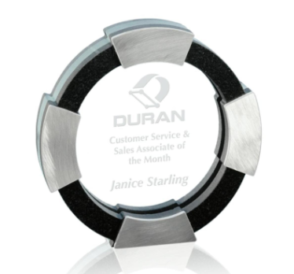
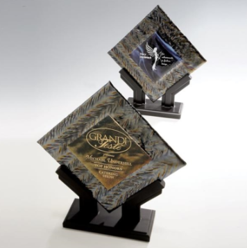
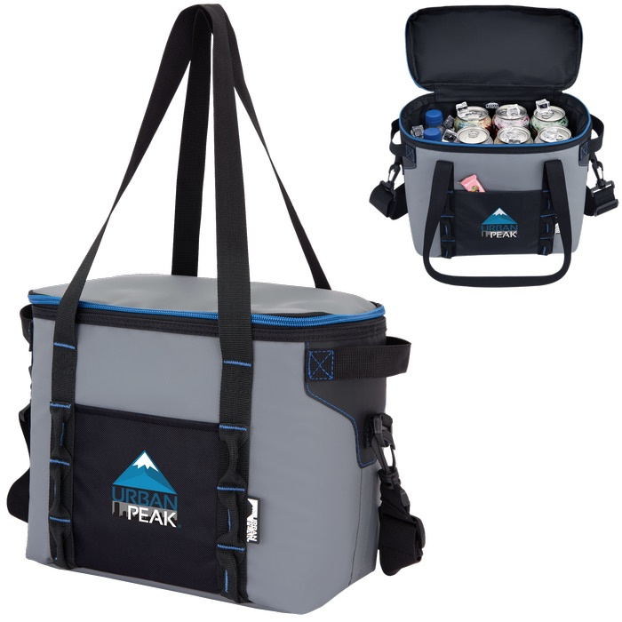

Number of Days Since Incident
Track and celebrate days without workplace incidents to build a proactive safety culture that protects employees and drives operational excellence.
Track and celebrate days without workplace incidents to build a proactive safety culture that protects employees and drives operational excellence.

Organizations with robust safety recognition programs experience 52% fewer workplace incidents compared to those without such programs.
Workplace injuries cost U.S. employers $170 billion annually in lost productivity, medical expenses, and workers' compensation.
Regular recognition of incident-free periods creates safety ambassadors throughout your organization who proactively identify hazards and maintain safe practices.
Discover our selection of safety awards and recognition items that celebrate incident-free records and honor workplace safety achievements.


Strategic implementation ensures maximum impact on safety culture and incident prevention.
Display incident-free days prominently in common areas, break rooms, and digital dashboards to create awareness and build momentum toward safety milestones.
Recognize and reward teams when reaching significant milestones (30, 60, 90 days) with public acknowledgments, safety awards, and team celebrations to reinforce positive behaviors.
Make incident prevention a shared responsibility by involving all team members in safety discussions and encouraging peer-to-peer recognition for maintaining safe work practices.